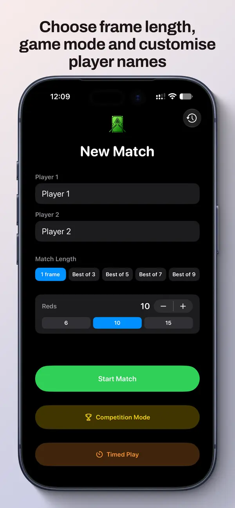
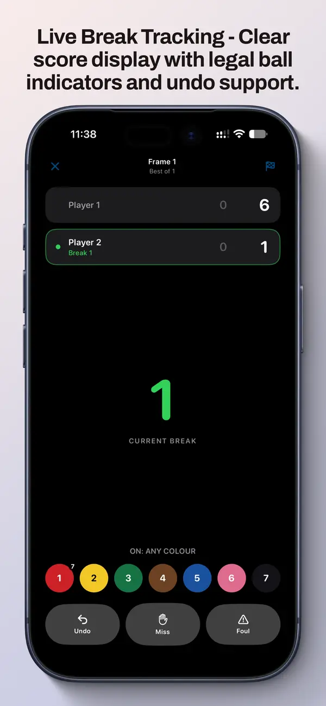
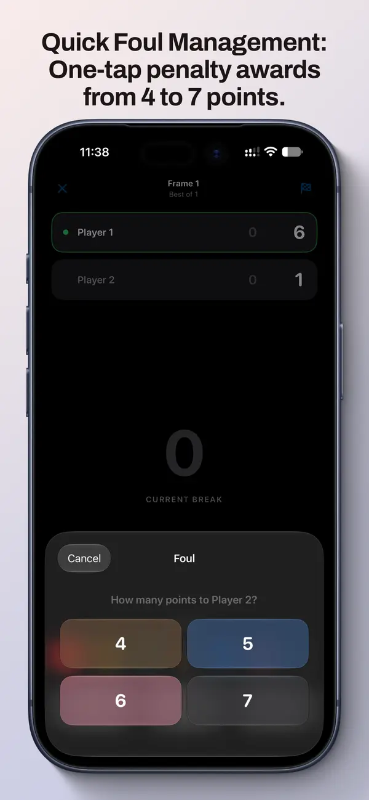
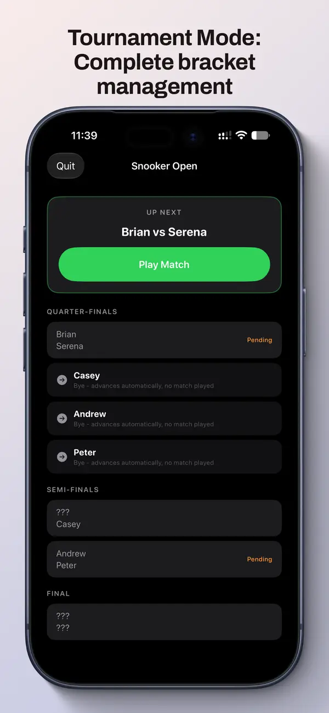

Live match tracking
Record every shot as it happens. Track frame scores, breaks, and individual shot results with an intuitive, tap-based interface that keeps up with the pace of play.
Snooker Scoring is a match tracking app for iPhone - record your shots, track tournament play, generate detailed reports and statistics, and keep a complete history of every frame you've played.

Snooker Scoring helps you record matches, analyse your play, and build a complete history of your snooker journey.
Record every shot as it happens. Track frame scores, breaks, and individual shot results with an intuitive, tap-based interface that keeps up with the pace of play.
Manage multi-match tournaments with automatic scoring, player progression tracking, and final standings - perfect for league play and organised events.
Break down your performance by match, frame and opponent. See win rates, average breaks, consistency trends and more to understand your game.
Generate shareable scorecards and tournament reports in PDF format - perfect for printing, sharing with opponents, or keeping records in your archive.
Every match you play is saved automatically. Search and filter your history by date, opponent, or result - build your snooker resume over time.



Snooker Scoring is completely free, with every feature included. It's supported by ads, and an optional subscription removes them.
Download the app and use everything at no cost - no credit card required.
Subscribe to enjoy the whole app without any ads.
Every feature is free to use. The optional subscription simply removes the ads and can be cancelled at any time in your App Store settings.
Pick the players and format, then begin the first frame.
Record pots, fouls and breaks as they happen. Frame scores update automatically.
Set up a multi-match tournament and let the app handle scoring, progression and final standings.
Check your statistics, search your history, and export a PDF scorecard or report.
Snooker Scoring is an iPhone app for keeping score and tracking matches: shots, frames, breaks, tournaments, statistics and a full match history.
Yes. Every feature is free and supported by ads. An optional subscription removes the ads and can be cancelled any time in your App Store settings.
Yes. Tournament mode manages multi-match events with automatic scoring, player progression and final standings.
Win rates, average breaks and consistency trends, broken down by match, frame and opponent.
Yes. Generate PDF scorecards and tournament reports to print, share with opponents or archive.
Every match is saved automatically, and you can search and filter by date, opponent or result.